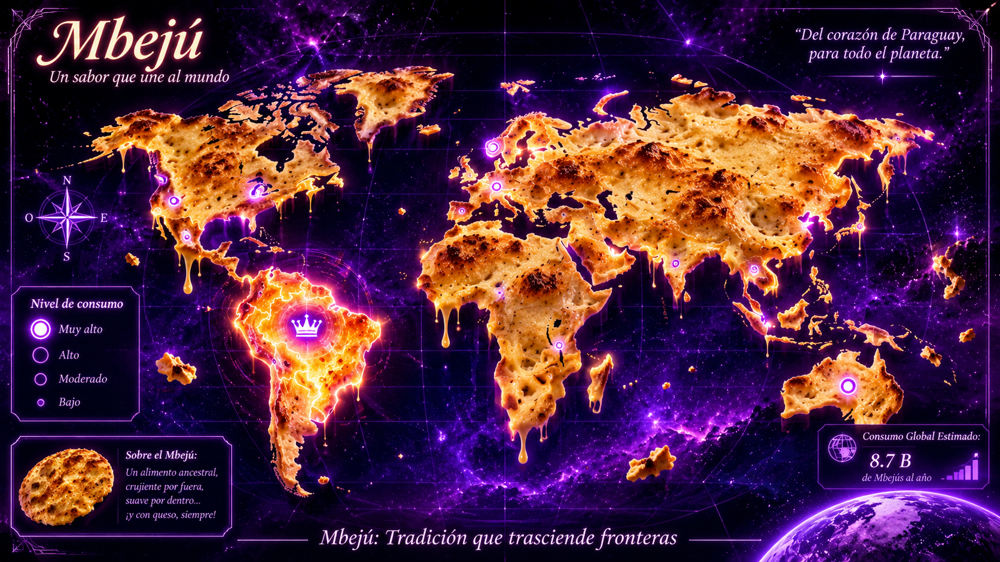

Ingredientes
- Huevos
- Queso de Campo o Queso fresco (Preferencia el queso de campo)
- Almidón de mandioca
- Manteca
- Leche
- Sal
Historia y Preparación
El mbejú (o mbeyú) es una especie de torta o pan plano frito originario de la gastronomía paraguaya. Su nombre proviene del guaraní y significa "torta aplastada". Es una herencia de la cocina mestiza cario-guaraní y española, muy popular también en el noreste de Argentina y el sur de Brasil. Se caracteriza por tener una textura crocante por fuera y muy tierna por dentro, con un intenso sabor a queso, ideal para el desayuno o la merienda junto a un mate o cocido quemado.
